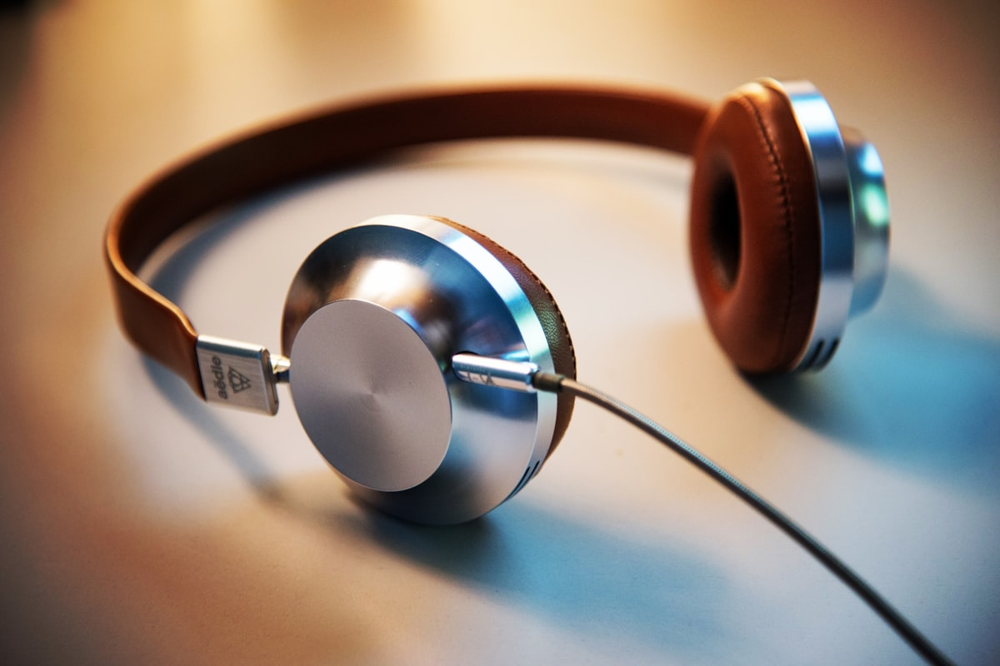

How often should I take this test?
Use it when you want a repeatable screening. For tracking, keep the same headphones, device, and quiet environment. Many people repeat it every few months or after a significant change in noise exposure.
A quick at‑home hearing test using pure tones. Compare left vs right across key frequencies.
No personal data is collected or stored. Your results are processed locally in your browser.
For informational screening only. Not a medical diagnosis. If you have hearing concerns, consult a licensed audiologist or clinician.

Let's set a comfortable volume level.
Please lower your device volume (e.g., to 20-30%) before playing the sound to avoid sudden loud noise.
After playing:
Slowly increase volume until the rubbing sound is clearly audible but comfortable (like a normal conversation).
Tone Frequency
Tap + to increase volume until you
JUST BARELY hear the tone.
Take a short break if needed. We will now test your Right Ear.
Date: --
Informational screening only. Not a medical diagnosis. Results are not clinically calibrated and depend on your device, headphones, and environment.
--
--
The chart summarizes your relative threshold setting for each test tone. Each point shows the lowest level (0–100) where you could just barely hear the tone during this session.
The horizontal axis shows frequency (pitch), from low tones (250Hz) to high tones (8kHz).
The vertical axis is a device‑dependent relative scale. Lower values near the top usually mean you needed less level to hear the tone under the same setup. Higher values mean you needed more level.
Set your device volume to a comfortable level using the reference sound, then keep it unchanged for the rest of the test.

We test 6 key frequencies (250Hz–8kHz) for each ear and record the lowest relative level where you can just hear each tone.

Get a visual summary and practical guidance on comparing ears and tracking results over time under the same setup.
Use it when you want a repeatable screening. For tracking, keep the same headphones, device, and quiet environment. Many people repeat it every few months or after a significant change in noise exposure.
No. Clinical hearing tests use calibrated equipment in controlled environments. This tool is an informational screening that produces device‑dependent, relative results. If you have concerns, symptoms, or sudden changes, consult a licensed professional.
The chart shows the lowest relative threshold setting (0–100) where you could just hear each tone. Lower values generally mean you needed less level under the same setup. Look for patterns (left vs right, low vs high frequencies) and repeat the test with the same settings if you want to track changes.
1000Hz is a common reference tone that many people can recognize easily. We then test higher frequencies and finish with lower ones to keep the flow consistent and reduce fatigue.
To keep the test simple and repeatable, it proceeds in a fixed order. If you were distracted or think a step was wrong, retake the test in the same quiet setup.
No. The test runs locally in your browser. We do not ask for email or signup, and your hearing results are not uploaded.
Use headphones (over‑ear preferred). Turn off EQ/enhancements if possible, and keep the same device volume for the entire test. A quiet room improves consistency.
Stop immediately and lower your volume. Do not keep listening to uncomfortable tones. If you have ear pain, sudden symptoms, or concerns, consult a clinician.